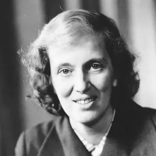

Mikołaj Jaworowski, Bartek Bąk | 2bT
Dorothy Crowfoot Hodgkin (1910-1994)
- Życiorys: Urodziła się w Kairze, gdzie spędziła część swojego dzieciństwa, zanim jej rodzina wróciła do Anglii.
Studiowała chemię na Uniwersytecie Oksfordzkim, gdzie później również prowadziła badania.
Jej praca nad strukturą krystaliczną przyniosła jej Nagrodę Nobla w 1964 roku.
Była aktywną działaczką na rzecz pokoju i praw człowieka.
- Sylwetka: Brytyjska chemik, laureatka Nagrody Nobla z Chemii w 1964 roku.
- Osiągnięcia: Pionierskie badania nad strukturą krystaliczną związków chemicznych, zwłaszcza białek. Opracowała technikę zwaną analizą strukturalną rentgenowską, która stała się fundamentalną metodą w badaniach nad strukturami złożonych cząsteczek.
Źródło: ChatGPT

Gertrude B. Elion (1918-1999)
- Życiorys: Urodziła się w Nowym Jorku, w rodzinie żydowskich imigrantów z Polski.
Studiowała chemię na Hunter College, a następnie uzyskała magisterium na Uniwersytecie Nowojorskim.
Przez większość swojej kariery pracowała w laboratoriach firmy farmaceutycznej Burroughs Wellcome (obecnie część GlaxoSmithKline).
Opracowała wiele leków, które znacząco poprawiły jakość życia pacjentów, za co otrzymała Nagrodę Nobla.
- Sylwetka: Amerykańska biochemik i farmakolog, laureatka Nagrody Nobla z Medycyny w 1988 roku.
- Osiągnięcia: Znana z pracy nad lekami przeciwnowotworowymi, lekami przeciwwirusowymi i immunosupresyjnymi. Współtworzyła leki, takie jak azatiopryna i acyklowir, które rewolucjonizowały leczenie różnych chorób.
Źródło: ChatGPT
Stephanie Kwolek (1923-2014)
- Życiorys: Urodziła się w Pensylwanii jako córka polskich imigrantów.
Studiowała chemię na Carnegie Mellon University.
Przez większość swojej kariery pracowała w firmie DuPont, gdzie odkryła kevlar.
Jej prace nad kevlarowymi włóknami miały zastosowanie w wielu dziedzinach, od ochrony osobistej po przemysł.
- Sylwetka: Amerykańska chemik, twórczyni technologii tkanin i odkrywczyni włókna kevlarowego.
- Osiągnięcia: Odkrycie kevlaru, bardzo wytrzymałego materiału, który jest wykorzystywany w przemyśle lotniczym, ochronie osobistej (np. kamizelki kuloodporne) i wielu innych dziedzinach.
Źródło: ChatGPT
Rosalind Franklin (1920-1958)
- Życiorys: Urodziła się w Londynie, gdzie studiowała na Uniwersytecie Cambridge.
Pracowała nad dyfrakcją rentgenowską na Uniwersytecie Londyńskim.
Jej praca nad strukturą DNA stanowiła fundament dla odkrycia podwójnej helisy przez Watsona i Cricka, choć sama nie została wówczas należycie doceniona.
Zmarła w wieku 37 lat na skutek raka.
- Sylwetka: Brytyjska chemik i biofizyk, badaczka struktury DNA.
- Osiągnięcia: Jej praca nad dyfrakcją rentgenowską była kluczowa dla ustalenia struktury podwójnej helisy DNA. Choć nie została wówczas doceniona, jej badania były kluczowe dla późniejszych odkryć Watsona i Cricka.
Źródło: ChatGPT
Marie-Anne Pierrette Paulze Lavoisier (1758-1836):
- Życiorys: Urodziła się w Montbrison we Francji.
Wyszła za mąż za Antoine'a Lavoisiera, znanego chemika, który wpłynął na jej zainteresowanie nauką.
Po śmierci męża kontynuowała jego badania i starania o upowszechnienie chemii.
Była również aktywna politycznie, wspierając rewolucję francuską.
- Sylwetka: Francuska chemik, współpracowniczka i żona Antoine'a Lavoisiera, jednego z pionierów chemii.
- Osiągnięcia: Była nie tylko współautorką wielu prac naukowych Lavoisiera, ale także przetłumaczyła na francuski wiele zagranicznych prac naukowych z dziedziny chemii. Po śmierci Lavoisiera kontynuowała jego prace i starania o upowszechnienie chemii.
Źródło: ChatGPT
Ada Yonath (*1939)
- Życiorys: Urodziła się w Jerozolimie w Brytyjskim Mandacie Palestyny.
Studiowała na Uniwersytecie Hebrajskim w Jerozolimie, a następnie uzyskała doktorat na Uniwersytecie w Jerozolimie.
Przez większość swojej kariery pracowała w Instytucie Weizmanna w Izraelu.
Jest pionierką badań nad strukturą rybosomu.
- Sylwetka: Izraelska biolożka strukturalna, laureatka Nagrody Nobla z Chemii w 2009 roku.
- Osiągnięcia: Zajmowała się badaniami nad strukturą rybosomu, co przyczyniło się do lepszego zrozumienia procesu translacji w komórkach oraz do opracowania nowych leków przeciwbakteryjnych.
Źródło: ChatGPT
Frances Arnold (*1956)
- Życiorys: Urodziła się w Pittsburghu w stanie Pensylwania.
Studiowała inżynierię chemiczną na Uniwersytecie Kalifornijskim w Berkeley.
Jest profesorem chemii, bioinżynierii i biochemii na California Institute of Technology (Caltech).
Jej prace nad ewolucją ukierunkowaną enzymów przyniosły jej Nagrodę Nobla z Chemii w 2018 roku.
- Sylwetka: Amerykańska inżynier chemiczny i biochemik, laureatka Nagrody Nobla z Chemii w 2018 roku.
- Osiągnięcia: Znana z pracy nad ewolucją ukierunkowaną enzymów, co umożliwia projektowanie nowych enzymów o pożądanych właściwościach. Jej prace mają zastosowania w przemyśle farmaceutycznym, chemicznym i energetycznym.
Źródło: ChatGPT